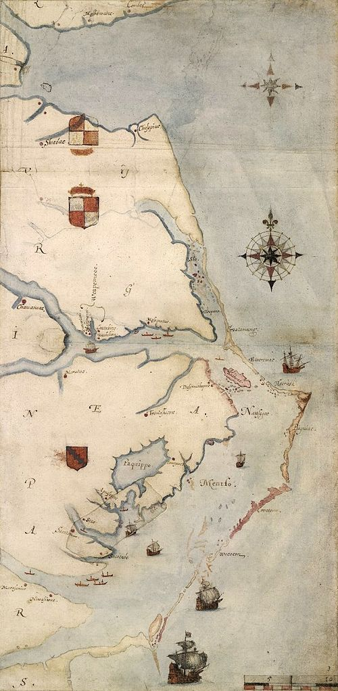

The Roanoke Colony (/ˈroʊəˌnoʊk/), also known as the Lost Colony, was the first attempt at founding a permanent English settlement in North America. It was established in 1585 on Roanoke Island in what is today's Dare County, North Carolina. The colony was sponsored by Sir Walter Raleigh, although he himself never set foot in it.
The initial setlement was established in the summer of 1585, but a lack of supplies and bad relations with the local Native Americans caused many of its members to return to England with Sir Francis Drake a year later, leaving behind a small detachment. These men had all disappeared by the time a second expedition led by John White, who also served as the colony's governor, arrived in July 1587. White, whose granddaughter Virginia Dare was born there shortly thereafter (making her the first English child born in the New World), left for England in late 1587 to request assistance from the government, but was prevented from returning to Roanoke until August 1590 due to the Anglo-Spanish War. Upon his arrival, the entire colony was missing with only a single clue to indicate what happened to them: the word "CROATOAN" carved into a tree.
For many years, it was widely accepted that the colonists were massacred by local tribes, but no bodies were ever discovered, nor any other archaeological evidence. The most prevalent hypothesis now is that environmental circumstances forced the colonists to take shelter with local tribes, but that is mostly based on oral histories and also lacks conclusive evidence. Some artifacts were discovered in 1998 on Hatteras Island where the Croatan tribe was based, but researchers could not definitively say these were from the Roanoke colonists.
As per Smith's and Strachey's reports, Dr. David Beers Quinn theorized that the colonists moved north to integrate with the Chesepians that Chief Powhatan claimed to have killed. To make the journey northward, Quinn believed that they used the pinnace and other small boats to transport themselves and their belongings. Naturally, if that were the mode of transportation, the colonists could have gone to live in other locations as well.
In her 2000 book Roanoke: Solving the Mystery of the Lost Colony, historian Lee Miller postulated that some of the Lost Colony survivors sought shelter with the Chowanoke, who were attacked by another tribe, identified by the Jamestown Colony as the "Mandoag" (an Algonquian name commonly given to enemy nations). The Mandoag are believed to be either the Tuscarora, an Iroquois-speaking tribe, or the Eno, also known as the Wainoke.
The so-called "Zuniga Map" (named for Pedro de Zúñiga, the Spanish ambassador to England, who had secured a copy and passed it on to Philip III of Spain), drawn about 1607 by the Jamestown settler Francis Nelson, also gives credence to this claim. The map states "four men clothed that came from roonock" were living in an Iroquois site on the Neuse. William Strachey wrote that, at the Indian settlements of Peccarecanick and Ochanahoen, there were reportedly two-story houses with stone walls. The Indians supposedly had learned how to build them from the Roanoke settlers.In both cases, as stated above, it is equally possible that these were survivors of Chief Powhatan's attack on the first Jamestown colonists.
There were also reported sightings of European captives at various Indian settlements during the same time period. Strachey wrote in 1612 that four English men, two boys and one girl had been sighted at the Eno settlement of Ritanoc, under the protection of a chief called Eyanoco. Strachey reported that the captives were forced to beat copper and that they had escaped the attack on the other colonists and fled up the Chaonoke river, the present-day Chowan River in Bertie County, North Carolina.
John Lawson wrote in his 1709 work A New Voyage to Carolina that the Croatans living on Hatteras Island used to live on Roanoke Island and claimed to have white ancestors:
A farther Confirmation of this we have from the Hatteras Indians, who either then lived on Ronoak-Island, or much frequented it. These tell us, that several of their Ancestors were white People, and could talk in a Book, as we do; the Truth of which is confirm'd by gray Eyes being found frequently amongst these Indians, and no others. They value themselves extremely for their Affinity to the English, and are ready to do them all friendly Offices. It is probable, that this Settlement miscarry'd for want of timely Supplies from England; or thro' the Treachery of the Natives, for we may reasonably suppose that the English were forced to cohabit with them, for Relief and Conversation; and that in process of Time, they conform'd themselves to the Manners of their Indian Relations.
From the early 17th century to the middle 18th century, European colonists reported encounters with gray-eyed American Indians who claimed descent from the colonists (although at least one, a story of a Welsh priest who met a Doeg warrior who spoke the Welsh language, is likely to be a hoax). Records from French Huguenots who settled along the Tar River in 1696 tell of meeting Tuscaroras with blond hair and blue eyes not long after their arrival. As Jamestown was the nearest English settlement, and they had no record of being attacked by Tuscarora, the likelihood that the origin of those fair-skinned natives was the Lost Colony is high.
Fred Willard and Phillip MacMullan believe that the colonists along with the Croatans relocated to villages along the Alligator River in an area known as "Beechland", slightly inland from Roanoke Island. Archeological remains of settlements have been discovered in the area, including coffins with Christian markings on them where there had been no previous record of a grave site, but their hypothesis is mostly based on oral histories and also lacks any definitive evidence.
In the late 1880s, North Carolina state legislator Hamilton McMillan discovered that his "redbones" (those of Indian blood) neighbors in Robeson County claimed to have been descended from the Roanoke settlers. He also noticed that many of the words in their language had striking similarities to obsolete English words. Furthermore, many of the family names were identical to those listed in Hakluyt's account of the colony. Thus on February 10, 1885, convinced that these were the descendants of the Lost Colony, he helped to pass the "Croatan bill", that officially designated the population around Robeson county as Croatan. Two days later on February 12, 1885, the Fayetteville Observer published an article regarding the Robeson people's origins. This article states:
They say that their traditions say that the people we call the Croatan Indians (though they do not recognize that name as that of a tribe, but only a village, and that they were Tuscaroras), were always friendly to the whites; and finding them destitute and despairing of ever receiving aid from England, persuaded them to leave [Roanoke Island], and go to the mainland... They gradually drifted away from their original seats, and at length settled in Robeson, about the center of the county...
However, the case was far from settled. A similar legend claims that the now extinct Saponi of Person County, North Carolina, are descended from the English colonists of Roanoke Island. However, no documented evidence exists to link the Saponi to the Roanoke colonists.
Other tribes claiming partial descent from surviving Roanoke colonists include the Catawba (who absorbed the Shakori and Eno people), and the Coree and the people who call themselves the Lumbee. Samuel A'Court Ashe was convinced that the colonists had relocated westward to the banks of the Chowan River in Bertie County, and Conway Whittle Sams claimed that after being attacked by Wanchese and Powhatan, the colonists scattered to multiple locations: the Chowan River, and south to the Pamlico and Neuse Rivers.
Another theory is that the Spanish destroyed the colony. Earlier in the century, the Spanish did destroy evidence of the French colony of Fort Charles in coastal South Carolina and then massacred the inhabitants of Fort Caroline, a French colony near present-day Jacksonville, Florida. However, a Spanish attack is unlikely, as the Spanish were still looking for the location of England's failed colony as late as 1600, ten years after White discovered that the colony was missing.
From 1937 to 1941, a series of inscribed stones was discovered that were claimed to have been written by Eleanor Dare, mother of Virginia Dare. They told of the travelings of the colonists and their ultimate deaths. Most historians believe that they are a fraud, but there are some today who still believe at least one of the stones to be genuine.[30] The very first one is sometimes regarded to be different from the rest, based on a linguistic and chemical analysis, and could possibly be genuine.
In May 2011, Brent Lane of the First Colony Foundation was studying the Virginia Pars Map, which was made by John White during his 1585 visit to Roanoke Island, and noticed two patches where the map had been corrected. The patches are made of paper contemporaneous with that of the map. Lane asked researchers at the British Museum in London, where the map has been kept since 1866, what might be under the patches, sparking a research investigation. On May 3, 2012, at Wilson Library of the University of North Carolina at Chapel Hill, members of the Foundation and representatives of the museum announced the discovery of "a large, square-shaped symbol with oddly shaped corners." This symbol, presumed to represent a fort, is visible when the map is viewed on a light box. Some scholars speculate that the colonists relocated to that location, on what is now called Salmon Creek in the Bertie County community of Merry Hill. The Scotch Hall Preserve golf course community was planned on the site, but it has not been fully developed.
The discovery of new information on the map led to more study of artifacts previously found, as well as additional digs in 2012 and 2014.
